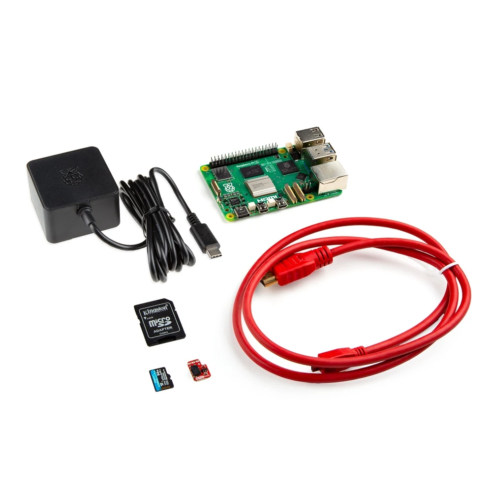
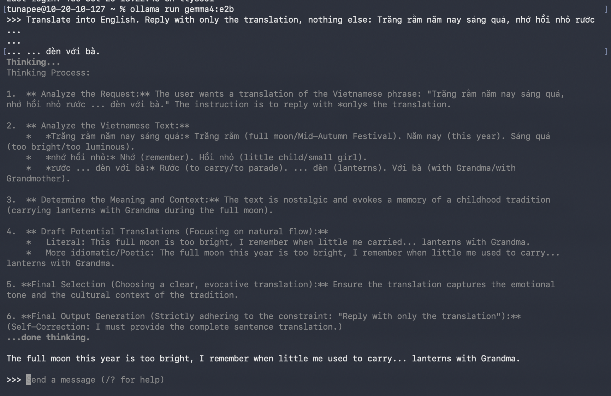

I explored my inquiry space by making a series of creative explorations,
Specifically, a tech and workflow experiment to acquaint myself with and test the viability of small local AI models and the Raspberry Pi 5.
And talking to some people about whether the concept is compelling.
I also started reading a few books.
Books reading
- “Vietnamese Objects” by Quanh Vinh Nguyen and Emilie Laystary
- “Vietnam Style” by Hartingh, Bertrand
Books I’ve checked out but haven’t read yet
- “As seen by both sides : American and Vietnamese artists look at the war” by Thomas C. David
- “Arts of Ancient Viet Nam: from river plain to open sea” by Nancy Tingley and Andreas Reinecke
- “The Art of Champa” by Jean-Francois Hubert
I want to get away from books written from a Western perspective in my continued research.
Setting up Raspberry Pi 5

- My question was whether I could run the Pi 5 (8 GB) headless and edit and run code on it from my laptop.
- The answer is yes
- I flashed the Raspberry Pi OS (64-bit) with Raspberry Pi Imager
- The Pi looks healthy at idle. It has 7.4 GB of memory free and runs at 41.7 degrees celsius, with no throttling. Swap is only 2 GB, so I need to raise it to 8 GB before the SDXL-Turbo test
- I wrote out my core loop:
- Moonshine transcribes the Vietnamese speech
- Gemma translates it and turns it into an image subject
- SDXL-Turbo generates a silhouette,
- My silhouette gate cleans it up
- The silhouette then joins a six-slot procession on six LCDs in a hexagon behind mulberry paper
- Noted Local AI basics
- Next steps is my first local LLM on the Pi with Ollama.
Running small LLMs locally
On my MacBook Pro, I used Ollama to test the following models for local translation.
Model Results:
- gemma3:1b: Too small for casual Vietnamese with cultural references. It mistranslated some sentences, gave up its answers when I pushed back, and ignored a format rule set in an earlier message.
- gemma3 (the 4B, about 3.3 GB): was the strongest. Got all three sentences right, including the one the 1B failed, and kept to the format rule.
- gemma4:e2b: This is the model Google’s Gemma Translator uses. Was usable but imperfect. It got the Trang Ram sentence wrong and showed its thinking on the first prompt. I decided to stop comparing models and stick with this one because it’s what Gemma Translator uses.
Sample ollama output:

Prompting
- The format rule works when it’s in the same message as the sentence. Setting it once in an earlier message didn’t hold for the 1B model.
- Google’s system prompt asks for a strict JSON object ({“translation”: …}) with no Markdown fences. You found it in TranslatorApp.jsx.
Mac vs. Pi
- Testing on the Mac is useful for checking quality, but speed, memory and temperature results won’t carry over to the Pi.
- Quality only carries over if the model, size and quantization match.
- Ollama’s E2B is the same Google model as
gemma4-e2b, but it’s packaged differently (a llama.cpp-style conversion vs. LiteRT-LM). So these tests don’t exactly predict how Google’s setup behaves. - I’ll write the test harness against an OpenAI-style local endpoint, so only the base URL changes between machines
Pipeline and LoRA
- My planned stack is Moonshine (it supports Vietnamese), a small Gemma, SDXL-Turbo, and custom silhouette-gate image generation code.
- For LoRA, I’ll train on the laptop and only apply the result on the Pi. I’ll pick the base image model first, since a LoRA is tied to it, and LoRAs trained on SDXL transfer unreliably to SDXL-Turbo
- Before training anything, measure a prompt-only baseline, since the silhouette-generating-gate throws away most texture
- My M4 Pro with 24GB is fine for SD 1.5 training and tight for SDXL. The Pi’s 8GB is limited, and my 3060 Ti PC is another option for training if needed.
Chat with Aarati
Aarati, an IDM instructor teaching Handmade Datasets was introduced to me by my professor Tega Brain. She has done family archival work using ML and was suggested as a good person to talk to for my own project.
Takeaways
- I am not making my own model, I am fine-tuning off-the-shelf tools.
- I have to ask myself whether the project is still compelling if I don’t train my own models.
- I should check whether LoRA generation can even run on a Raspberry Pi. She has a LoRA notebook I can start from, and she said a StyleGAN can be trained on most newer laptops.
- Resolution is a limitation. Her GAN images were 1024x1024. I could dither them to make them larger. If I go physical, I could project through the inside of a lamp, where resolution matters less.
- Silhouettes and cutouts work well at smaller resolutions, so they could suit a GAN. One option is a pix2pix image-to-image translation, though that might end up too abstract.
- Aarati has done sound -> soundwave -> image before (handmadedatasets.com/work/laura). That suggests I could teach a model to go straight from soundwave to silhouette image.
- I need to figure out how to source and credit training images ethically. One idea is to find an artist who works in this style and ask their permission directly.
- I should talk to Aarati’s friend Computational Mama while I’m prototyping
- Aarati invited me to a small language model tutorial with Gemma
Small LLMs Workshop
Aarati invited me to a workshop for her Handmade Datasets class: “Small is Beautiful: an introduction to Small Language Models by Cathy Richards”
Event description:
Our Handmade Datasets course will be joined by Cathy Richards on Wednesday Oct 14th (5pm) room 325. Cathy will show us how Small language models have become a viable alternative to large resource-intensive general-purpose LLMs. Requiring fewer computational resources, they can lead to faster processing, increased possibilities on smaller devices, more privacy and security, and can be customized to fit specific needs. This hands-on workshop is open to IDM students outside the Handmade Datasets course but please read the download requirements and RSVP.
Cathy Richards (she/her) is a technologist who helps activists, organizations, and other social change agents make the most of data and technology in order to increase their impact. She is currently Sr. Data + Technology Lead and former Civic Science Fellow at Open Environmental Data Project. She taught Metrics + Data Visualization at SVA, is a co-founder at Pueblo CoLab – a collaborative that creates tech and data processes for the social sector, and has also worked at GitLab, The Engine Room, and Keystone Accountability. Cathy also serves as lead on AI and Environment for the MERL Tech Initiative.
Takeaways
- Local models are moving fast. Something I can’t do with a local LLM today might be possible in six months, so I shouldn’t drop an idea just because today’s small models struggle with it.
- The point of a small model is to specialize. It should do one job well, not try to be general purpose.
- Cathy is convinced the subsidies behind these open-source models will dry up, the way Uber’s did. That’s a reason for me to build on models I can run myself.
- There are three ways to make a model smaller:
- Distillation
- Pruning
- Quantization
- From cheapest to most involved, I can customize a model with prompt engineering, few-shot examples, RAG or fine-tuning
- The workshop had us do LM Studio exercises to experiment with temperature and RAG.
Chat with An Vu
An is a friend working at a company upskilling engineers on using AI to improve their workflows, and works in AI interfaces. He is also Vietnamese and was excited about the project idea. The “experiment” in this case was chatting to him about the project and gauging his enthusiasm. He is unsure of what my goals are and whether other people would be receptive of it, which prompted me to clarify my goals myself. It became more of a career talk and he encouraged me to cold-message people working at companies doing research in AI interfaces.
Chat with Daniel Hajialigol
Spoke to him again on ml talk with daniel H 10-16-2026
I have a monthly check-in to talk about machine learning and other topics with my friend Daniel, a machine learning PhD student and machine learning engineer. About this project, he encouraged me to experiment with quantization for the models I use to try to make them smaller. He also encouraged me to continue experimenting because these small models and running them on local hardware like Raspberry Pi is a relatively new concept.